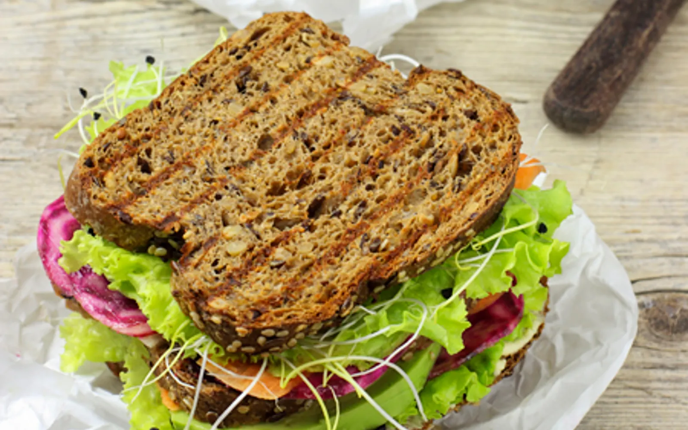

Avocado Cashew Sandwich

Image Source: One Green Planet
Based off a delicious sandwich Andrew and I ate at a vegan restaurant in Gainesville, FL
Yummy sandwich with healthy avocado and cashew fats
Ingredients
- bread slices
- roasted cashews
- avocadoes
- tomatoes - sliced
- red onions - sliced
- sprouts
- balsamic vinegar
- olive oil
Steps
- Add sliced avocado and cashews to sandwich.
- Layer on tomatoes, red onions, and sprouts.
- Carefully drizzle with balsamic vinegar and olive oil.